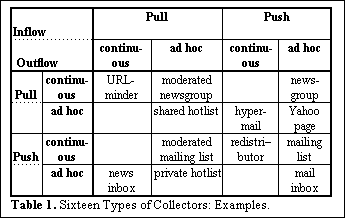
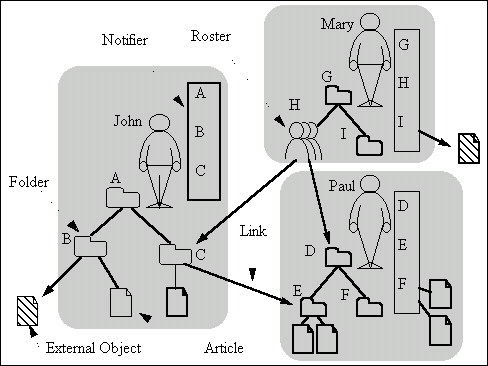
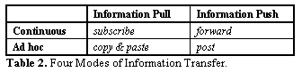

Grassroots: Providing a Uniform Framework for Communicating, Sharing Information, and Organizing People
Kenichi Kamiya, Martin Röscheisen, Terry Winograd
- Computer Science Department
- Stanford University
- Stanford
- CA 94305 USA
- {kamiya, rmr, winograd@cs.stanford.edu}
ABSTRACT
People currently use a disparate set of systems such as e-mail, newsgroups, hypermail, shared Web hotlists, hierar-chical indexes, etc. for activities which often cut across the boundaries implicit in each of these systems. Grassroots is a system that provides a uniform user-conceptual model to functionalities currently found in such systems, while not requiring people to give up other systems. It is designed to co-exist with and leverage from existing systems. A prototype implementation has been completed based on a Web http proxy.
Keywords
Activity-level interface integration; e-mail, newsgroups.
INTRODUCTION
People organize pieces of information into diverse collec-tions such as e-mail folders, newsgroups, and mailing lists. Such collections mediate various types of collaborations, including communicating, structuring, and sharing information, and organizing people. Grassroots seamlessly integrates functionalities from such "collection-mediated collaboration." It thus not only provides a tool for personal communication and information management, but its ability for access-controlled sharing also enables the continuous construction of shared representations (as an "organizational memory" when used in organizations).
The Grassroots system relies on a model, described in [1], according to which a broad range of information sharing activities can be categorized and understood. In particular, this includes the idea of having "collectors" as generic elements to represent collections such as e-mail folders (collections of mail messages), newsgroups (articles), Web pages (HTML links), mailing lists (addresses), access-control groups (identities), etc. Collectors have inflow and outflow, and there are a few canonical operations that can be applied to them. In this view, collaboration between people is mediated by collections; people communicate with each other by transferring information between their collectors.
A transfer can be initiated by the owner of the source collector (information push mode) or by the owner of the destination collector (information pull mode). A transfer can be continuous (all incoming items are transferred to a destination collector) or ad hoc (decided on a case-by-case basis). Hence, an information transfer is in one of four modes: continuous pull, continuous push, ad hoc pull, and ad hoc push. With one mode of inflow and one mode of outflow, we then have sixteen types of collectors. Note how various existing systems each support certain parts of the potentially possible collection-mediated collaboration (cf. Table 1).

Note that inflow and ourflow are viewed here from the perspective of a collector; this models the "physics" of collection-mediated collaboration.
THE USER MODEL OF GRASSROOTS
Grassroots integrates collaboration-mediated activities into one uniform user-conceptual model by providing a simple set of objects and operations that allow users to create Grassroots-internal collectors (called folders) and seamlessly interoperate with outside collectors that are accessible. Conceptually, Grassroots consists of four types of objects: folders, notifiers, links and articles.
Units for Organizing Information: "Folders"
Folders are Grassroots' collectors for structuring informa-tion and people; a folder for organizing people is also called a roster. Folders can contain articles (pieces of text), other folders, or links (pointers to folders or to external collectors). In a roster, a link to one of a person's folders stands in for this person. Under a folder, a user can create Grassroots objects, change their attributes, cut or copy them, and paste them into another folder using the clipboard in the server. By combining these elements, a folder in Grassroots can be used as any of the above sixteen types.
Views for Presenting New Information: "Notifiers"
Each user has one notifier which uniformly presents the information items (articles and links) newly added to each of the user's folders. A notifier is automatically divided into sections corresponding to the structure of the folders; then each section lists the items that arrived at a corresponding folder.
A user can post an item to another user's folder. If John posts an article to folder E in Figure 1, the article appears in section E of Paul's notifier instead of appearing in folder E. Paul can choose some items in his notifier, and accept them; they are then moved into the corresponding folder. Posting an item to a roster is equivalent to posting it to all folders linked from the roster or its sub-rosters.

Figure 1. The Objects of Grassroots.
Information Transfer between Folders
Grassroots provides generic operations for all of the four transfer modes; the names are given in Table 2. Two attributes of links, subscription and forward, can generate continuous flow of information to and from a folder. Consider, in Figure 1, John sets the subscription attribute of the link pointing from folder C to folder E. Whenever a new item is brought into folder E, a copy of it appears in John's notifier in section C. Similarly, if the same link's forward attribute is set, whenever John puts an item into folder C, its copy appears in Paul's notifier in section E. A roster can be used to subscribe to or forward to a set of folders at once. Similarly, access to a folder can be authorized by changing the attributes of links pointing to other folders.

USAGES OF GRASSROOTS
Information Gathering and Routing
By chaining subscription and forward links, users can create a network for continuous cooperative information gathering and routing. Users filter information by choosing which folders to subscribe to or copy from, which items to accept in the notifier (and thus insert it into the corres-ponding folder), and where to forward information to.
The visibility of the filtering mechanism differentiates Grassroots from other social filtering systems which try to statistically match users with similar interests by comparing their evaluations [3]. In the latter, since the process of "computing interest groups" is opaque, users sometimes wonder why something was proposed to them. For Grassroots' users, it is clearly visible what kinds of information they are getting from where and why.
Unifying Existing Functionalities
A Grassroots folder can be used as an e-mailbox, for example. People can post articles to a folder, and its owner can be notified of them through his or her notifier. By using many addressable folders, Grassroots avoids the need for "intelligent filters" [2] at the receiver's side because the incoming items are not mashed together into one stream in the first place. Users can choose one of their folders and give its address to potential senders; conversely, a sender can browse a recipient's folder hierarchy (if authorized) and decide where to leave a message. When recipients open their notifiers, all items are already sorted into the sections according to the structure and priorities of their folders.
A folder of Grassroots can also take on the role of a newsgroup. This would be the case if people subscribe to a folder and post articles to it. Grassroots' way of having newsgroups has advantages pertaining to light-weight creation, access control, competition, and as-needed-only replication.
Another example is that with the same set of generic operations that can be applied to a folder, rosters can be used to manage access-control groups, mailing lists, etc. For example, adding a new member to a list is just pasting a link into the corresponding roster-in the same style and as easy as one would add a new document link to a hotlist. Note that all the familiar variants of mailing lists are covered: moderated/unmoderated lists, lists with approval required for joining, etc.
THE PROTOTYPE SYSTEM
The current Grassroots prototype is a set of perl scripts running on a Unix CERN http-proxy server, enabling users to interact with Grassroots from any Web browser. Preliminary results of its experimental use are reported in a more extensive report about Grassroots [1]. This work is being done in the context of the Stanford Integrated Digital Library Project.
CONCLUSION
Grassroots uniformly integrates and augments a wide va-riety of systems that use collection-mediated collaboration.
REFERENCES
- Kamiya, K., Röscheisen, M., and Winograd, T. Grassroots, Technical Report, Stanford University, Cf. URL http://diglib.stanford.edu/Grassroots/.
- Malone, T.W. et al. Semistructured messages are... ACM TOIS. 5, 2 (April 1987), 115-131
- Resnick, P. et al. GroupLens: An Open... in Proc. CSCW'94 (Chapel Hill NC, 1994), ACM, 175-186